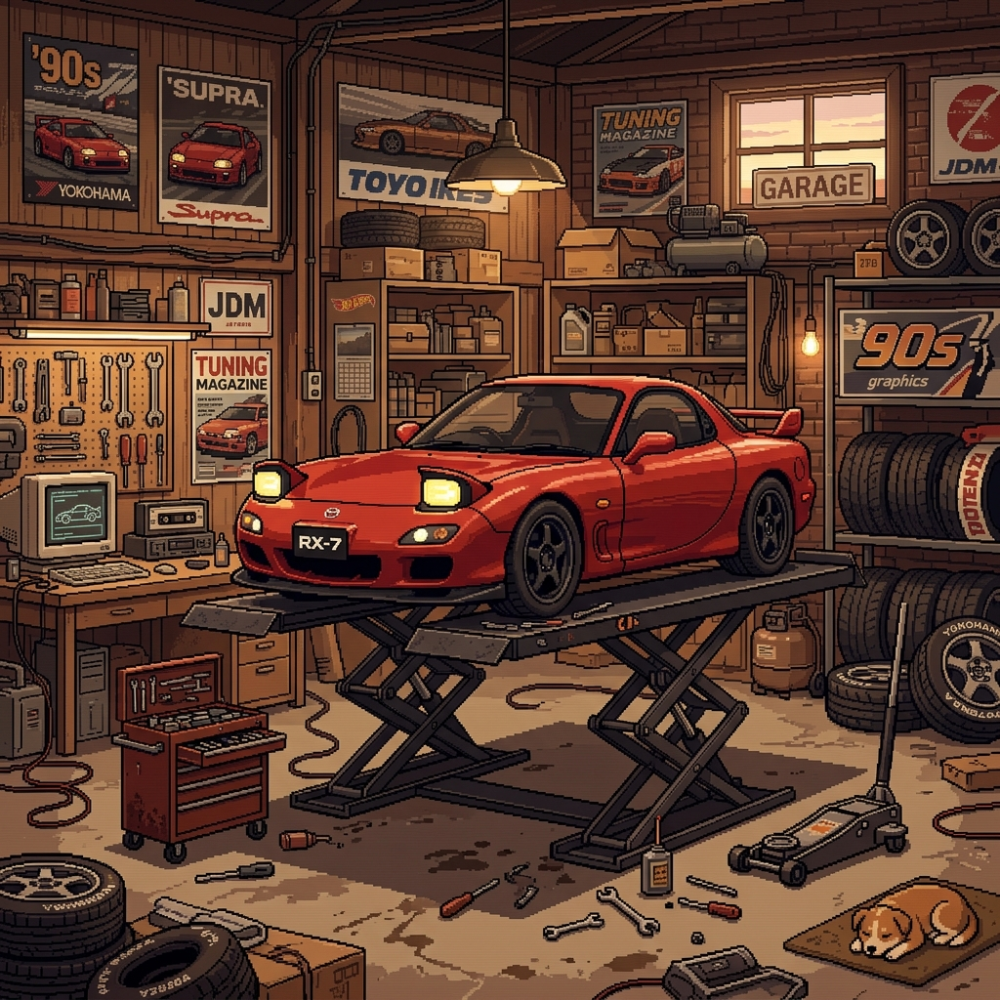
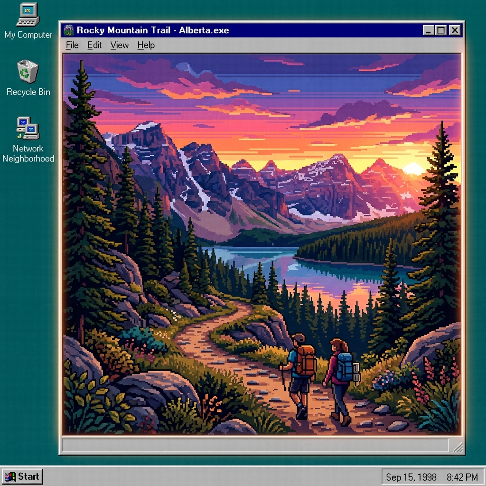
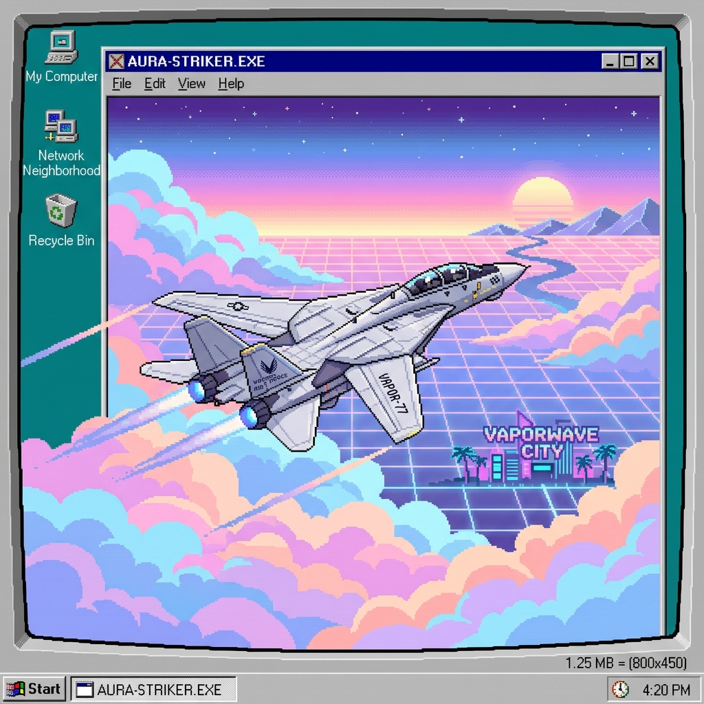
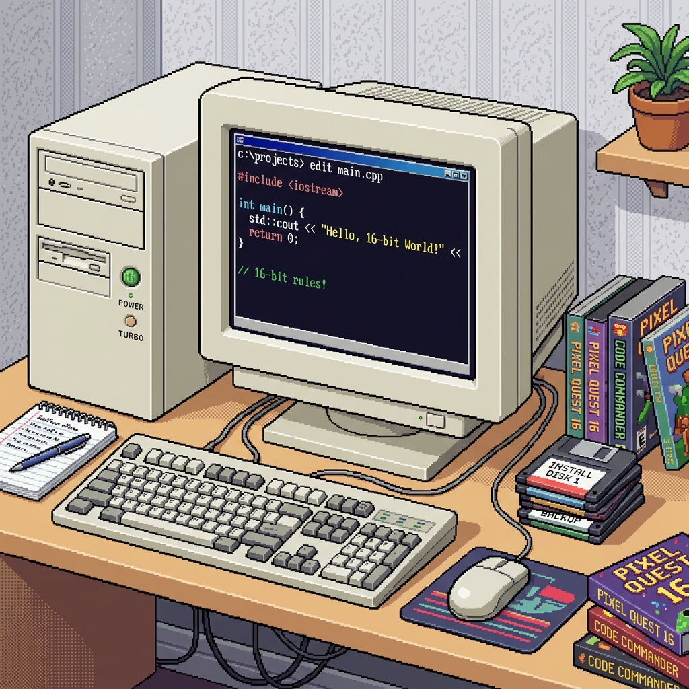

Cool Stuff
Photos, hobbies, and extras
Photos
This section is meant to feel human. I can swap these images with whatever you upload next.




Quick Facts
- Based in Calgary, Alberta.
- I like building systems that feel simple to use and simple to operate.
- I care about performance, reliability, and clean UI.